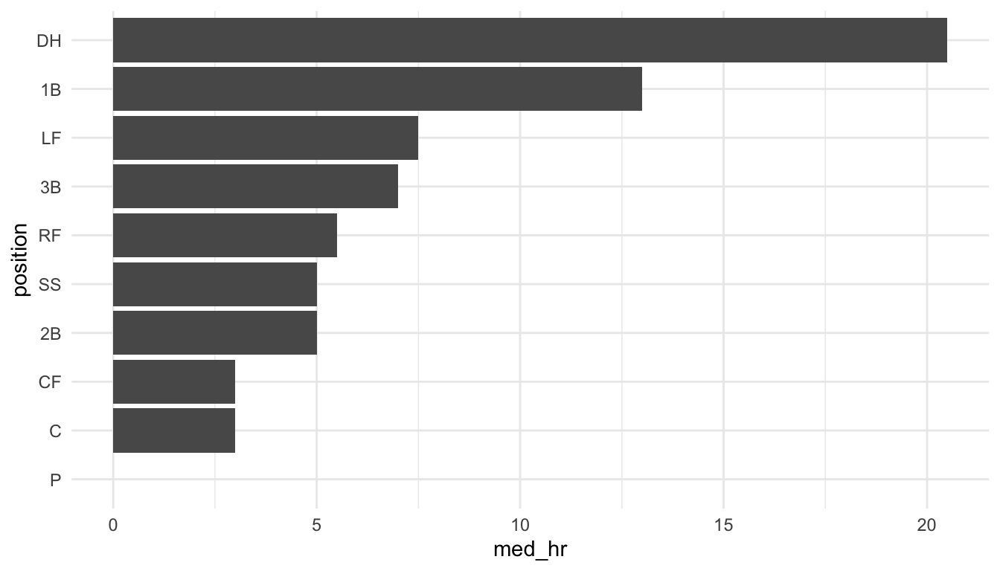

library(tidyverse)
theme_set(theme_minimal())
library(here)
pokemon_df <- read_csv(here("data/pokemon_full.csv"))
pokemon_height <- pokemon_df |>
filter(Type %in% c("Bug", "Electric", "Fighting", "Flying",
"Grass", "Steel")) |>
group_by(Type) |>
summarise(avg_height = mean(height)) |>
mutate(Type = fct_reorder(Type, avg_height))
ggplot(data = pokemon_height, aes(x = Type, y = avg_height)) +
geom_col() +
coord_flip()7 Expressing Variability/Uncertainty
Expressing variability is usually important to do in visualizations. In this section, we will explore why graphs that express variability are generally better than graphs that do not using a couple of examples.
7.1 Are Bar Plots Bad? (Class Prep)
Read this short article from the Nature scientific journal, arguing that bar charts “should be purged from much of the scientific literature.”
But, we’ve constructed a few bar plots (and lollipop plots) throughout this course. Have we been making a major mistake?
In some contexts, bar plots are very bad. In general, when they are used to represent summary statistics from continuous variables (like a plot of the sample mean for each level of a categorical variable), they can obscure a lot of the underlying data’s relevant features, including the distribution shape and the sample size. But perhaps most importantly, they obscure any variability in the data. We will see some examples of this in the examples below.
We have used bar plots or lollipop plots to graph counts of categorical variables. In general, using bar plots to represent counts or proportions is still perfectly fine!
I would be remiss if I did not include the Pokemon data set at least once in this course. So, here it is! Suppose that we want to compare heights of a few different types of pokemon: Bug, Electric, Fighting, Flying, Grass, and Steel pokemon. To do so, we will make a bar plot of the average height of each type with the code below:
From this graph, it might be tempting to conclude that, on average, Steel type pokemon are the tallest while the other types have approximately equal average height. In particular, it looks like Steel type Pokemon have twice the height of Bug type Pokemon, on average.
Exercise 1. What can’t we see from this graphic that would be useful?
Exercise 2. Make a different plot that shows more relevant features about the distribution of the height variable in each Pokemon type.
This issue is very easy to find in other real data sets. As a second example, consider a baseball data set that graphs the median number of homeruns for each player position from a set of Major League Baseball players in the year 2018.
## install.packages("openintro")
library(openintro)
data(mlb_players_18)
mlb_sum <- mlb_players_18 |> group_by(position) |>
summarise(med_hr = median(HR)) |>
mutate(position = fct_reorder(position, med_hr))
ggplot(data = mlb_sum, aes(x = position, y = med_hr)) +
geom_col() +
coord_flip()
Exercise 3. “Fix” the previous plot to show the underlying variability in the number of homeruns for each player position by making a set of boxplots.
Exercise 4.
Consider a news channel covering a developing hurricane. Which of these types of graphs would better help the general public with the potential variability of the hurricane’s path?
OR
Exercise 5.
Next, consider fivethirtyeight.com’s coverage of the 2020 presidential election. Much of their forecast given on this page can be simply summarised by saying they predict Biden to win the election with 89% probability. So, why make the supplementary graphics that say the same thing but use a lot more space?
7.2 STAT 113 Survey
You may recall from taking STAT 113 that you completed a survey at the beginning of the semester. Responses from the survey were then used in some examples throughout the semester. We will explore some of these surveys from the past few years, examining different trends in some of the variables through time. For this example, we will also pay particular attention to making sure that our graphics show the underlying variability in the data.
To begin, read in the data set:
The data set has many variables. Some that we will use are:
-
time_both, the semester and year the survey was taken -
GPA, the current GPA of the student -
Tattoo, whether or not the student has a Tattoo -
TV, the amount of time spent watching TV per week -
Facebook, the number of Facebook friends
Using this data set, we answer some interesting questions. First, is there evidence of grade inflation at SLU? That is, is there evidence that student GPAs have increased over time? We will start this problem by making a sketch of a couple of visualizations we might want to create.
7.3 Your Turn
Exercise 1. Is there evidence from the STAT 113 survey that tattoos have become more or less common (at least among SLU students)? Construct a plot that shows the proportion of students who have a Tattoo in each semester from the STAT 113 survey, along with standard error bars for the estimate in each semester.